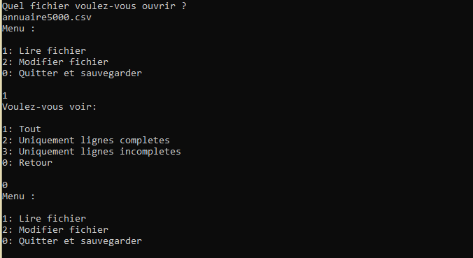
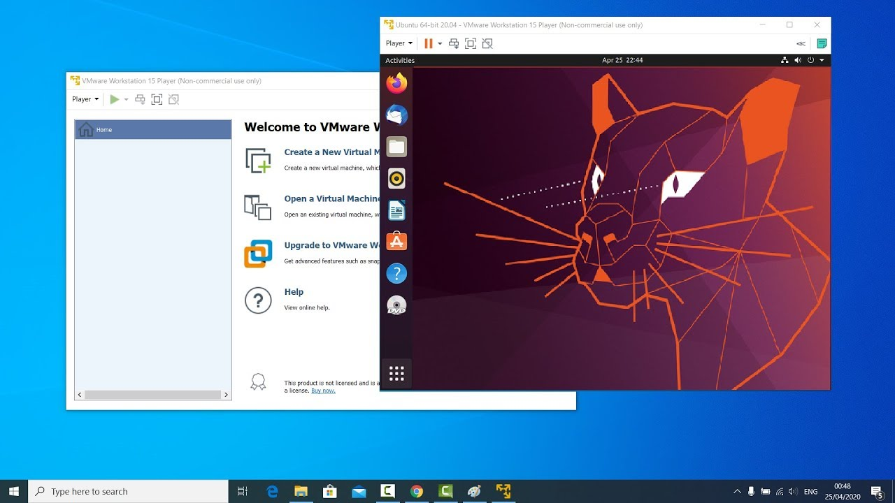
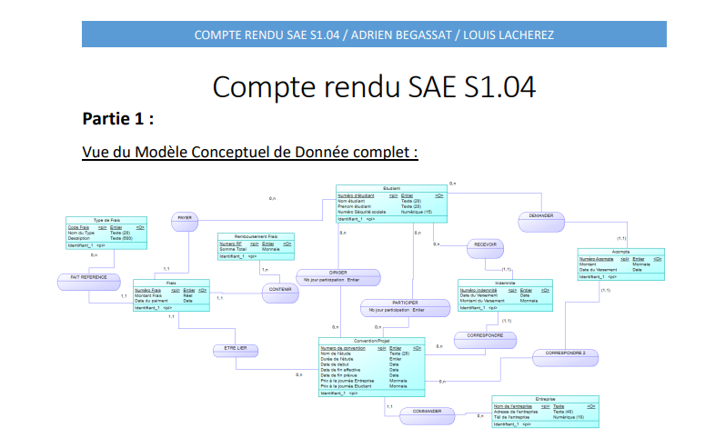
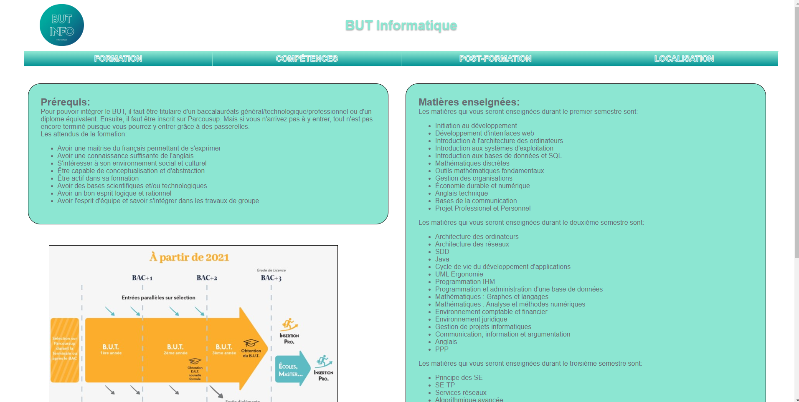
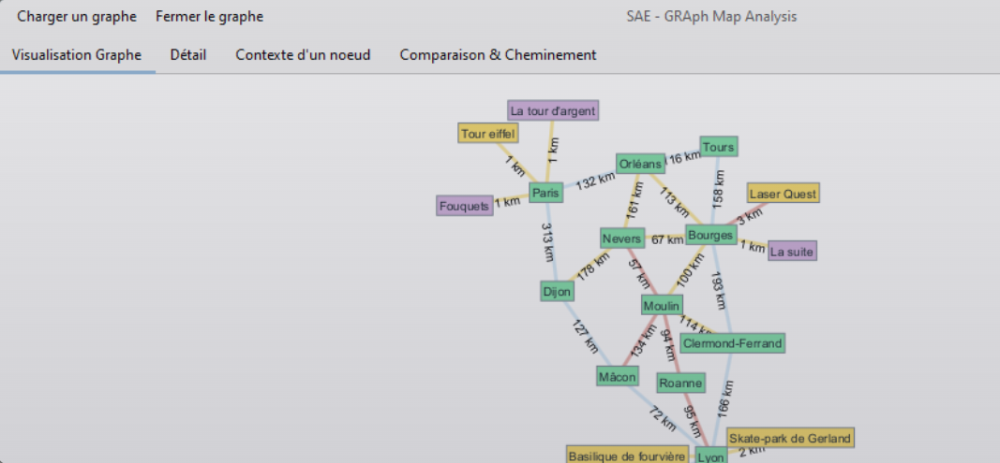
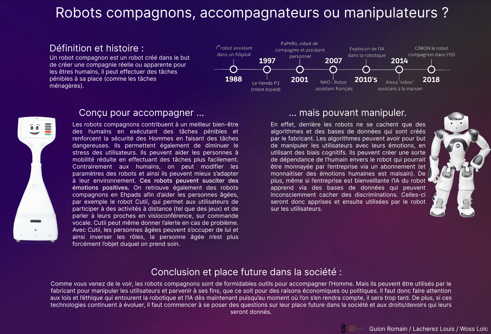
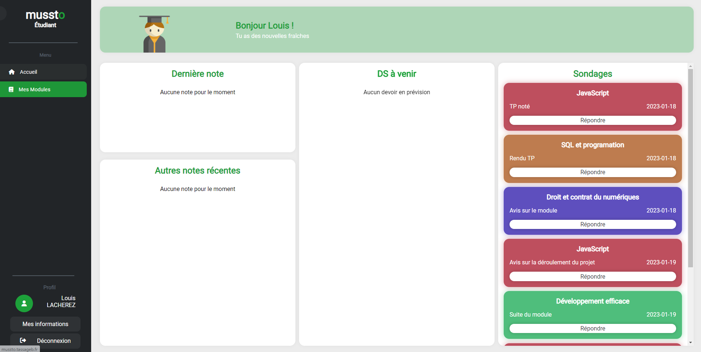

C'est un projet en bînome qui consiste à faire une application C en console capable d'afficher et de manipuler un annuaire de 5000 contacts à partir d'un fichier csv.
C'est un projet consistant à créer un poste de travail pour du développement informatique ainsi que la création d'une notice d'utilisation pour Windows 10. Il a été réalisé en bînome.
Un projet en bînome consistant en la création d'une base de données à partir de contraintes fixées à l'avance.
Site internet en HTML/CSS qui devait présenter le B.U.T. à des lycéens et leurs parents ainsi qu'à des entreprises qui pourraient être intéressées par des étudiants de B.U.T., celui-ci a été fait en bînome.
C'est mon premier projet en groupe de 4 au B.U.T., on devait produire un compte rendu sur l'environnement économique et écologique dans le secteur de l'informatique.
Projet en Java en bînome où nous avons utilisé JavaSwing pour l'IHM et nous sommes inspiré de nos cours de mathématiques pour la création des algorithmes utilisés par l'application, elle permet de parcourir et de visualiser un graphe représentant une carte de circulation routière.
Ce projet était un TP en salle réseau en bînome, nous devions mettre sur un serveur Apache notre site présentant le B.U.T. réalisé au S1.
Oral en bînome consistant à présenter les données d'une base de données et à les analyser afin d'en tirer des conclusions en utilisant l'outil PowerBI.
Projet en groupe de 3 consistant à créer un poster sur le thème des robots compagnons et à le présenter durant une présentation orale.
Unique SAE du S3 durant laquelle nous avons dû réaliser un site web avec une partie back-end sur le thème de notre choix. Notre groupe de 4 étudiants a choisit du faire un site de gestion scolaire. Durant ce projet nous devions tout gérer(planning, gestion de projet etc...). Voici le lien vers Mussto.
